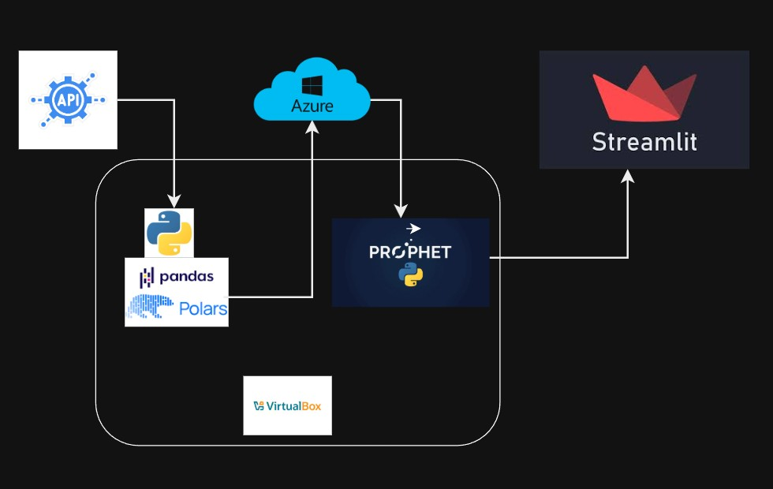
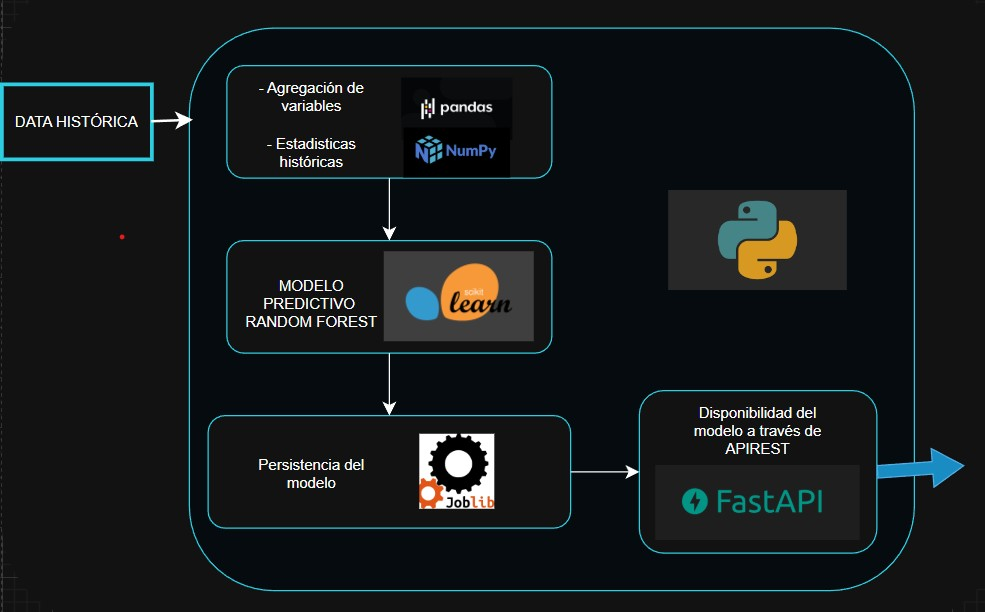
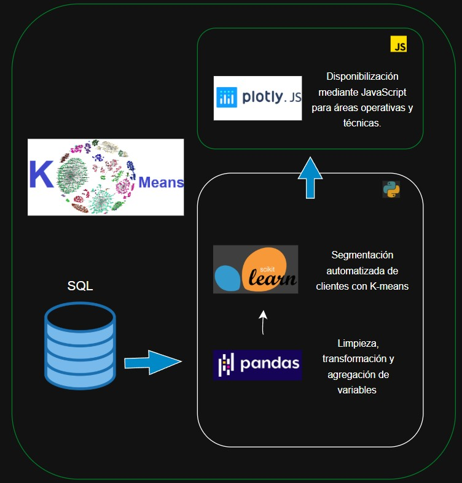
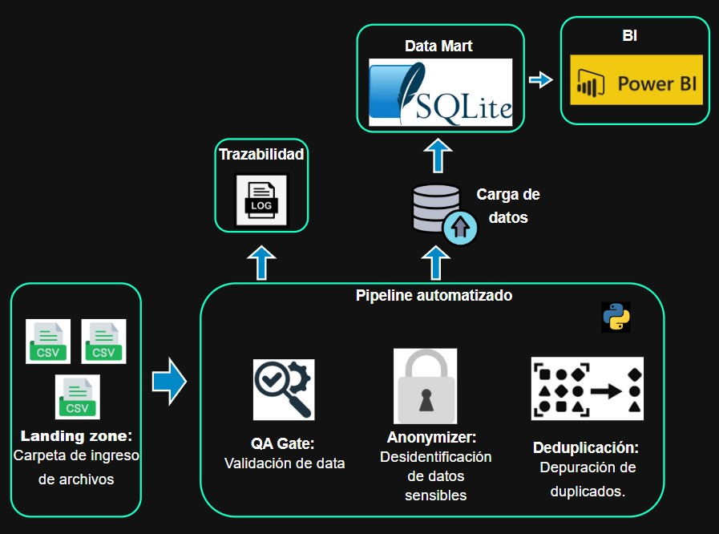

Contexto Profesional
Experiencia desarrollando soluciones de analítica y machine learning en entornos operativos,
integrando pipelines de datos, modelos predictivos y tableros ejecutivos para la toma de decisiones y
la optimización de procesos.
Formación especializada en Big Data, con enfoque en análisis de datos,
estadística aplicada y sistemas de información.
Creo firmemente que un dato bien gestionado es la herramienta más poderosa para revolucionar
la toma de decisiones y elevar el rendimiento de cualquier organización.
UNA MUESTRA DE MI TRABAJO

Sistema de soporte a decisiones basado en Series Temporales, Azure Data Lake y procesamiento de alto rendimiento con Polars.

Random Forest de clasificación para gestión de flota de vehículos de sistema masivo.

Identificación de perfiles de usuario mediante K-Means, PCA y métricas RFM.

Centralización de datos transaccionales y despliegue de tableros de control ejecutivo.
Además de mis proyectos estructurales, he desarrollado utilidades y
micro-servicios diseñados para la optimización operativa diaria.
Mi enfoque es automatizar lo repetitivo para ganar tiempo en lo
estratégico.
Automatización & ETL
- Data Cleaning: Scripts para normalización masiva de archivos inconsistentes.
- Soluciones On-Edge: Almacenamiento de data particionada en local para ambientes altamente restrictivos, la cultura de data debe cambiar, pero mientras esto pasa, el negocio debe continuar.
Utilidades & Análisis
- EDA: Scripts para realizar procesos de minería de datos y evaluación de datasets.
- Análisis Ad-hoc: Notebooks de respuesta rápida para preguntas de negocio urgentes.
- NLP Inferencia: Clasificación rápida de texto y análisis de sentimientos mediante modelos preentrenados.